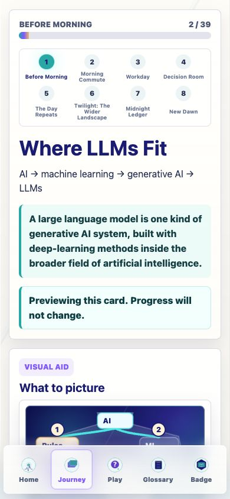

Prompt Life v0.17.5
Bottom Nav Icon Legibility Report
Date: June 5, 2026
This report wraps the small UI pass that makes the bottom navigation icons easier to identify on mobile.
What Changed
- Bumped the visible app version to
v0.17.5. - Increased live bottom nav icon width from
1.3remto1.95rem, a 50% increase. - Raised bottom nav button height from
56pxto66pxso icons and labels have room. - Updated the internal style-guide bottom-nav mock to match the live nav sizing.
Files Changed
src/main.tsxsrc/styles/global.cssdocs/REVIEW_NOTES.mddocs/stage-audits/v0-17-before-morning/screenshot-index.mddocs/stage-audits/v0-17-before-morning/screenshots/v0-17-5-bottom-nav-icons.png
Verification
npm run typecheck: passed.npm run build: passed with the existing Vite large-chunk warning.npm run build:pages: passed with the existing Vite large-chunk warning.- Browser QA at 390px: icons render at about
31pxsquare, labels remain visible, and the dock stays inside the mobile viewport.
Known Issues
The existing Vite large-chunk warning remains. No navbar-specific issue was observed.
